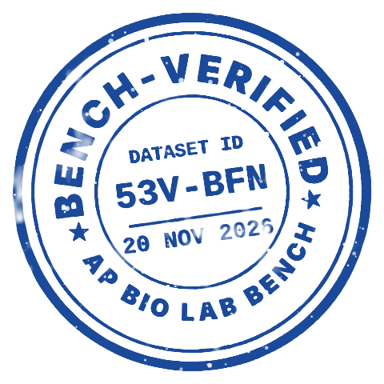
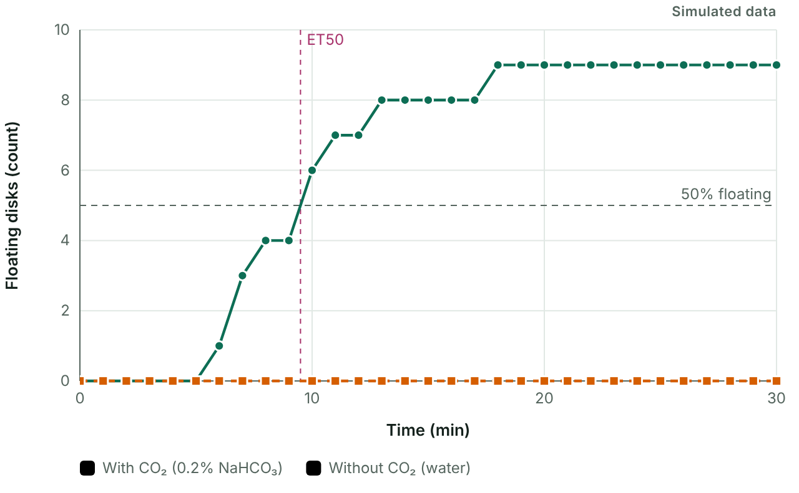
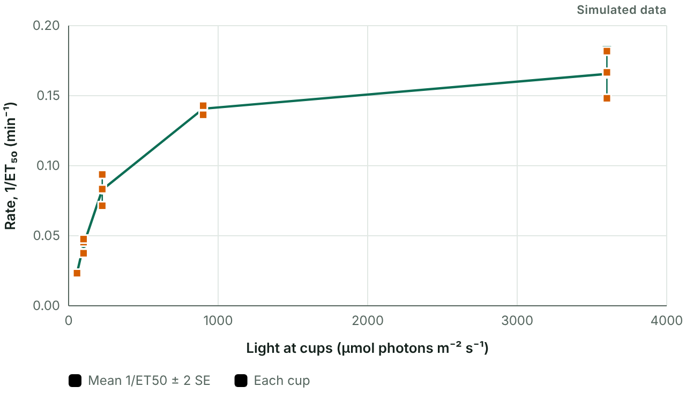
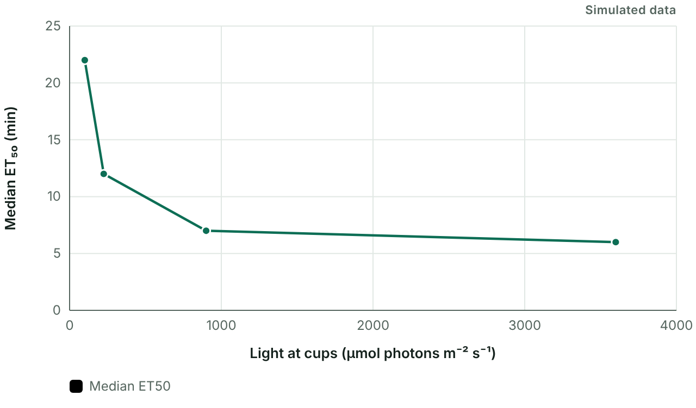

AP Biology lab report
Lab 5 · Photosynthesis Virtual Lab
- Name
- Sample Student
- Class period
- Demo
- Date
- November 20, 2026
- Dataset ID
- 53V-BFN
All data in this report were generated by a computer simulation, not measured in a wet lab.
Key results
| Result |
|---|
| ET50, bicarbonate cup: 9.5 min |
| 1/ET50, bicarbonate cup: 0.105 min⁻¹ |
| FRQ self-score: 4 of 4 |
| Confidence: 2 (I mostly get it) |
Pre-lab: Before you start
Pre-lab quiz: 8 of 8 correct
Using the summary equation, how many molecules of O2 are released for each molecule of glucose (C6H12O6) made?
Answer: 6 O2 (Correct)
Why do leaf disks sink after you pull a vacuum on them in the syringe and release it?
Answer: Gas in the spongy mesophyll is removed and replaced by solution, so the disk becomes denser than the solution. (Correct)
If you treat leaf disks in a way that increases the net rate of photosynthesis, how will they behave?
Answer: They will float sooner, so ET50 gets smaller. (Correct)
A cup of 10 disks gives these counts of floating disks at the end of minutes 0–12: 0, 0, 0, 0, 0, 1, 1, 2, 3, 4, 4, 6, 8. Estimate ET50 by linear interpolation.
Answer: 10.5 min (Correct)
Another trial gives ET50 = 8 min. What is 1/ET50?
Answer: 0.125 min⁻¹ (Correct)
You move a lamp from 10 cm to 20 cm above the cups. Using the inverse square law (the simulation’s model), what fraction of the original light intensity reaches the disks?
Answer: 0.25 (as a decimal) (Correct)
Why would leaf disks under green light rise more slowly than disks under the same number of red or blue photons?
Answer: Chlorophylls absorb red and blue light strongly but absorb little green light, which is mostly reflected or transmitted. (Correct)
Why is the median (ET50) a better summary for a cup than the mean time to float?
Answer: A disk occasionally rises very late or never, which would drag the mean far off but barely moves the median. (Correct)
Float assay: Count floating disks and find ET50
Before you start the timer, predict what will happen in each cup (with and without bicarbonate) and why. Which disks float first, or do some never float?
I predict the disks in the bicarbonate cup will float first because NaHCO₃ supplies CO₂ for the Calvin cycle, so photosynthesis can run and O₂ will collect in the air spaces. The water-only cup has almost no CO₂, so I expect few or none of its disks to float.
| Time (min) | Floating, with CO₂ (disks) | Floating, without CO₂ (disks) | Light |
|---|---|---|---|
| 0 | 0 | 0 | on |
| 1 | 0 | 0 | on |
| 2 | 0 | 0 | on |
| 3 | 0 | 0 | on |
| 4 | 0 | 0 | on |
| 5 | 0 | 0 | on |
| 6 | 1 | 0 | on |
| 7 | 3 | 0 | on |
| 8 | 4 | 0 | on |
| 9 | 4 | 0 | on |
| 10 | 6 | 0 | on |
| 11 | 7 | 0 | on |
| 12 | 7 | 0 | on |
| 13 | 8 | 0 | on |
| 14 | 8 | 0 | on |
| 15 | 8 | 0 | on |
| 16 | 8 | 0 | on |
| 17 | 8 | 0 | on |
| 18 | 9 | 0 | on |
| 19 | 9 | 0 | on |
| 20 | 9 | 0 | on |
| 21 | 9 | 0 | off |
| 22 | 9 | 0 | off |
| 23 | 9 | 0 | off |
| 24 | 9 | 0 | off |
| 25 | 9 | 0 | off |
| 26 | 9 | 0 | off |
| 27 | 9 | 0 | off |
| 28 | 9 | 0 | off |
| 29 | 9 | 0 | off |
| 30 | 9 | 0 | off |

ET50 for the bicarbonate cup (min)
9.5
1/ET50 (per min)
0.105
What happened in the "Without CO2" cup? Explain why it is the control and what it shows about the role of bicarbonate.
None of the 10 water-only disks floated in 30 min. It is the control because it differs only in having no bicarbonate. Without a CO₂ source the Calvin cycle cannot fix carbon, NADP⁺ is not regenerated, and the light reactions soon stall, so little O₂ is made. This shows the bicarbonate (CO₂) is what allowed the floating.
If you covered the cups, describe what happened to the floating disks and explain it in terms of cellular respiration. Was the sinking slope steeper or shallower than the floating slope? Why?
I covered the cups at minute 20, when 9 of 10 disks with CO₂ were floating. By minute 30, 9 were still floating, so none had sunk yet. In the dark there is no photosynthesis, but cellular respiration keeps using O₂ from the air spaces, so the disks slowly lose buoyancy and eventually sink. The sinking slope is much shallower than the floating slope because the respiration rate is far lower than the photosynthesis rate in bright light.
Explain why the floating disk assay measures net photosynthesis rather than gross photosynthesis. How could you use the dark experiment to estimate gross photosynthesis?
Respiration uses O₂ the whole time, so the O₂ that builds up in the disk is what photosynthesis makes minus what respiration uses. That is net photosynthesis. The dark period measures respiration alone, so gross photosynthesis ≈ net rate (floating) + respiration rate (sinking in the dark).
Design: Test a variable of your choice
Your testable question
How does light intensity (lamp distance) affect the net rate of photosynthesis (1/ET₅₀) in spinach leaf disks?
Hypothesis and prediction, with the biological reasoning (and a null hypothesis)
If the lamp is closer, then ET₅₀ will be shorter and 1/ET₅₀ higher, because more photons drive the light reactions and make O₂ faster. At very close distances the rate should level off because the Calvin cycle (CO₂ supply, rubisco) becomes limiting. Null hypothesis: lamp distance has no effect on 1/ET₅₀.
Independent variable and levels, dependent variable, and variables held constant
Independent variable: lamp distance (5, 10, 20, 30, 40 cm). Dependent variable: ET₅₀ (min), converted to 1/ET₅₀ (min⁻¹). Held constant: 0.2% NaHCO₃, spinach disks of the same size, 10 disks per cup, 1 drop of soap, 25 °C water with the heat filter in place.
Control and replicates: what is your control, and why that many cups?
There is no zero-light cup in this design, so I compare the distances with each other, and the water-only cup from the float assay already showed that disks do not float without CO₂. I used 3 cups per level because disks vary; three replicates give a mean and standard error, so I can judge whether differences are real.
Before you run your design, predict how the rate (1/ET50) will change across your levels, and explain why in terms of photosynthesis.
I predict the rate (1/ET₅₀) will decrease as the lamp distance increases, because light intensity falls with the square of the distance, so fewer photons reach the chlorophyll.
| Level | Cups (count) | Median ET50 (min) | Mean 1/ET50 (min⁻¹) | SE (min⁻¹) | ±2 SE (min⁻¹) |
|---|---|---|---|---|---|
| 5 | 3 | 6.0 | 0.166 | 0.010 | 0.019 |
| 10 | 3 | 7.0 | 0.141 | 0.002 | 0.004 |
| 20 | 3 | 12.0 | 0.083 | 0.006 | 0.013 |
| 30 | 3 | 22.0 | 0.044 | 0.003 | 0.006 |
| 40 | 3 | — | 0.023 | — | — |
| Level | Cup | ET50 (min) | 1/ET50 (min⁻¹) |
|---|---|---|---|
| 5 | 1 | 6.8 | 0.148 |
| 5 | 2 | 5.5 | 0.182 |
| 5 | 3 | 6.0 | 0.167 |
| 10 | 1 | 7.0 | 0.143 |
| 10 | 2 | 7.3 | 0.136 |
| 10 | 3 | 7.0 | 0.143 |
| 20 | 1 | 14.0 | 0.071 |
| 20 | 2 | 10.7 | 0.094 |
| 20 | 3 | 12.0 | 0.083 |
| 30 | 1 | 22.0 | 0.045 |
| 30 | 2 | 21.0 | 0.048 |
| 30 | 3 | 26.7 | 0.037 |
| 40 | 1 | > 45 | |
| 40 | 2 | > 45 | |
| 40 | 3 | 43.0 | 0.023 |


Describe your results. Compare the two graphs: why does the ET50 graph slope the opposite way from the 1/ET50 graph? Do the ±2 SE error bars of neighboring levels overlap, and what does that suggest?
The closest lamp gave the fastest flotation: at 5 cm the median ET₅₀ was 6.0 min (mean 1/ET₅₀ = 0.166 min⁻¹), while at 30 cm it was 22.0 min (mean 1/ET₅₀ = 0.044 min⁻¹). At 40 cm, 2 of 3 cups had not reached 50% floating by 45 min, so ET₅₀ there is longer than 45 min; I left those cups out of the mean instead of counting them as zero. Both graphs plot light at the cups (closer lamp = more light): the rate graph rises with light while the ET₅₀ graph falls, because the rate is the reciprocal of the time; a faster process reaches 50% floating sooner. Where the ±2 SE bars of neighboring levels do not overlap, the difference is probably real; where they overlap, I cannot be confident those levels differ.
If you varied light, CO2, or temperature: where does your curve level off or peak? What becomes the limiting factor there?
The curve flattens close to the lamp: moving from 10 cm to 5 cm gives about 4 times as much light, but the mean rate only rose from 0.141 to 0.166 min⁻¹. There, light is no longer the limiting factor; the CO₂ supply (0.2% bicarbonate) and the speed of Calvin cycle enzymes such as rubisco limit the rate instead.
Censored ET50 graph explanation
Partially censored: 40. Some cups did not reach ET50 by 45 min (ET50 >45 min; 1/ET50 <0.0222 min⁻¹). The plotted mean uses only measured rates; censored values are excluded rather than counted as zero.
Analyze: Make sense of your data
1. Graph ET50 and 1/ET50 against your independent variable (done above). Explain the inverse relationship between ET50 and the rate of photosynthesis.
ET₅₀ is the time needed for half the disks to float, so a faster rate of net photosynthesis makes O₂ faster and gives a shorter ET₅₀. Taking 1/ET₅₀ turns the time into a rate, so a bigger value means faster photosynthesis.
2. Why did the procedure use the median (ET50) rather than the mean time to float? How did you show the variability in your data?
A few disks may float very late or never (damaged or thicker disks), which would drag a mean far off; the median time for 50% is barely affected by those outliers. I showed variability by running 3 cups per level and plotting mean 1/ET₅₀ with ±2 SE error bars.
3. How do the light reactions and the Calvin cycle each connect to what you measured? Which part of photosynthesis did your independent variable most directly affect?
The light reactions split water and release the O₂ that makes the disks float, and they make ATP and NADPH. The Calvin cycle uses that ATP and NADPH to fix CO₂ from the bicarbonate; without it, NADP⁺ runs out and O₂ production slows. Lamp distance most directly affected the light reactions, because it changed how many photons reached the chlorophyll.
4. Respiration happens in leaf cells the whole time. How does that change what the floating disks tell you? Could a disk ever fail to float even though it is photosynthesizing?
Respiration uses some of the O₂ as it is made, so floating only shows net photosynthesis (photosynthesis minus respiration). A disk could photosynthesize but still not float if its respiration uses almost all of the O₂, for example in very dim light near the compensation point.
Your bicarbonate cup reached 50% floating at ET₅₀ = 9.5 min (the first disk floated at minute 6); by minute 30 the water-only cup had 0 of 10 disks floating. Explain why your bicarbonate disks floated when they did, and what the control cup shows about the role of CO₂.
My disks started rising at minute 6 and reached ET₅₀ = 9.5 min, after the light reactions had made enough O₂ to fill the air spaces that the vacuum emptied. The water cup had no floating disks, which shows that CO₂ from the bicarbonate is needed: without carbon fixation, photosynthesis cannot keep making O₂.
Your cup 3 at level 30 had ET₅₀ = 26.7 min, while the median for that level was 22.0 min. Give one reason this cup's ET₅₀ might differ from the other cups at its level (think about disk-to-disk variation and technique).
The disks in that cup may have been cut from a thicker part of the leaf or near a vein, or been damaged by the vacuum, so they needed more O₂ to float. Small differences in how much solution was infiltrated also change the starting density.
Claim
Increasing light intensity (moving the lamp closer) increased the net rate of photosynthesis in spinach leaf disks, until the rate began to level off at the closest distances.
Evidence (median ET50s, mean 1/ET50 ± 2 SE)
At 5 cm the median ET₅₀ was 6.0 min and the mean 1/ET₅₀ was 0.166 ± 0.019 min⁻¹ (±2 SE, 3 cups). At 30 cm the median ET₅₀ was 22.0 min and the mean 1/ET₅₀ was 0.044 ± 0.006 min⁻¹. The error bars do not overlap. At 40 cm, 2 cups never reached ET₅₀ within 45 min.
Reasoning (connect to light capture, CO₂ fixation, enzymes, or respiration)
More light means more photons absorbed by chlorophyll in photosystems II and I, so water is split faster and O₂ builds up in the spongy mesophyll sooner, making the disks buoyant. At high light the Calvin cycle (CO₂ fixation by rubisco) cannot keep up, so the rate levels off: light stops being the limiting factor.
Evaluate: Where can you go from here?
Compare your predictions with your results. Which were right, and which were not? Use a number from your data (with units). What does any mismatch tell you about your thinking?
My float-assay prediction was right: the bicarbonate cup reached ET₅₀ at 9.5 min and no water-only disk floated. My design prediction was also right in direction: the mean rate fell from 0.166 min⁻¹ at 5 cm to 0.044 min⁻¹ at 30 cm as the lamp moved away. I did not predict how much the curve would flatten close to the lamp, which showed me that light was not the only limiting factor.
Could the way you perform the procedure (disk size, solution depth, soap amount, how you cut disks, swirling) change the outcome? If the outcome changes, does that mean the net rate of photosynthesis changed? Explain.
Yes. Bigger or thicker disks, deeper solution, too much soap, damaged edges or not swirling can all change ET₅₀. That changes when the disks float, not necessarily the photosynthesis rate per cell, so technique has to be kept the same across all cups to compare treatments fairly.
How would you expect the light response curve of a shade-grown leaf to compare with that of a sun-grown leaf? Design a two-variable experiment to test it.
A shade leaf should reach its maximum rate at lower light and level off sooner, with a lower maximum; a sun leaf keeps rising to higher light. I would test two variables: leaf type (sun vs. shade leaves from the same plant) and lamp distance (5 levels), with 3 cups per combination, and compare the light response curves.
A lamp very close to the cups can heat the water. How would that confound a light-intensity experiment, and how would you prevent it?
If the close lamp warms the water, enzyme activity and gas solubility change too, so I could not tell whether light or temperature caused a faster rate. I kept the water heat filter between the lamp and cups and would check the temperature of each cup with a thermometer.
C₄ plants such as corn concentrate CO₂ around rubisco. Predict how their response to low bicarbonate or high temperature would differ from spinach, and explain how you would test it.
C₄ plants concentrate CO₂ around rubisco and avoid photorespiration, so I predict corn disks would keep a higher rate at low bicarbonate and at high temperature than spinach (a C₃ plant). I would run both species at several bicarbonate concentrations (and at two temperatures) with 3 cups per level.
List one misconception about photosynthesis you had before this lab and how your evidence changed your thinking.
I used to think the O₂ released in photosynthesis comes from CO₂. It actually comes from splitting water in the light reactions. My water-only cup puzzled me at first, because it had light and water but no disks floated. It showed me that the two stages depend on each other: without CO₂ the Calvin cycle stops, NADP⁺ is not regenerated, and the light reactions (and O₂ release) slow down.
(a) Identify the independent variable, the dependent variable and two variables that must be held constant.
Independent: distance from the lamp (light intensity). Dependent: ET₅₀ (or 1/ET₅₀). Held constant: bicarbonate concentration and water temperature (also disk size and plant type).
(b) Explain why disks float when exposed to light, and why ET50 is used instead of the time for every disk to float.
In light, photosynthesis releases O₂ into the air spaces of the spongy mesophyll, so the disks become less dense than the solution and float. ET₅₀ is the median, so one slow or damaged disk does not change it much, while waiting for every disk could take a very long time.
(c) Predict how ET50 will change as the lamp moves from 30 cm to 5 cm, and how the rate (1/ET50) would change if the lamp heated the water a lot.
Moving from 30 cm to 5 cm increases light intensity about 36 times (inverse square), so ET₅₀ will get shorter, leveling off at the closest distance. If the lamp heated the water a lot, the rate (1/ET₅₀) could fall because enzymes such as rubisco denature and less CO₂ stays dissolved.
(d) Justify why a control cup of water without bicarbonate is included.
The water-only cup is identical except that it has no CO₂ source. If its disks do not float while the bicarbonate disks do, the floating must come from photosynthesis that depends on CO₂, not from the soap, the vacuum or warming of the cups.